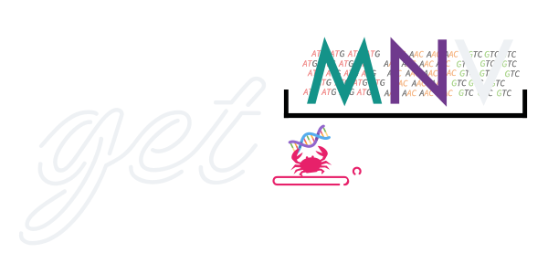
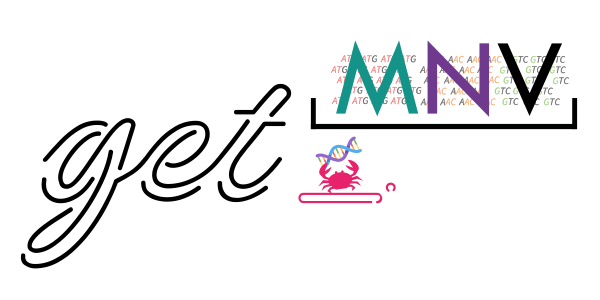
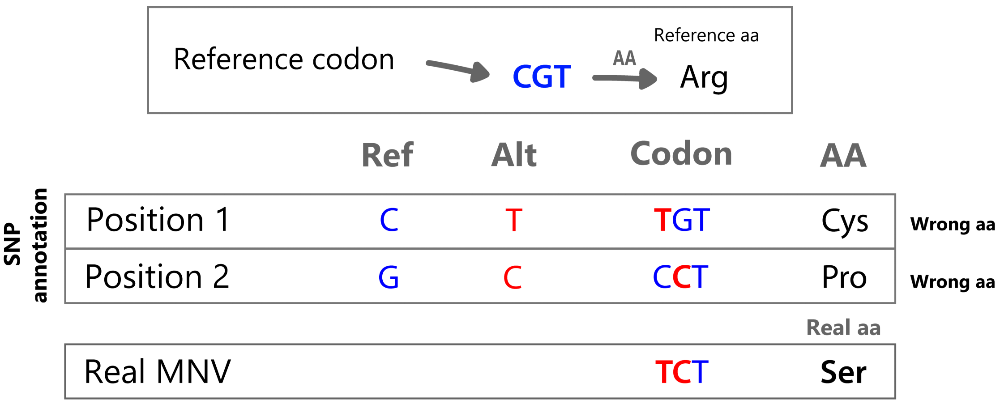

get_MNV
Codon-level Multi-Nucleotide Variant detection and indel annotation, from a VCF or an iVar TSV. Pure Rust, no C dependencies, on macOS, Linux and Windows.
Start here · See a real report
get_MNV finds cases where two or more SNVs fall in the same codon and should be interpreted together. These combined changes can produce a different amino acid effect than the individual SNVs alone.


The problem, in one codon
That is the figure above, in words. A codon reads CGT and codes arginine, and a caller reports two substitutions inside it:
| Read as | Codon | Amino acid |
|---|---|---|
| Reference | CGT | Arg |
Position 1 alone, C>T | TGT | Cys |
Position 2 alone, G>C | CCT | Pro |
| Both together | TCT | Ser |
An annotator that takes each substitution on its own reports a cysteine and a proline. Neither happens. If the two changes sit on the same molecule, the protein carries a serine, which is the answer get_MNV gives.
Whether they really do sit on the same molecule is a separate question, and with a BAM get_MNV counts the reads that carry both rather than assuming: see Linkage.
What it does with them
| Step | What it reads | What it produces |
|---|---|---|
| 1. Decompose | the REF/ALT pair of each record | the individual changes it holds: SNV, MNV, insertion, deletion, delins |
| 2. Place | the reference and the gene annotation | which feature each change falls in, and which codon |
| 3. Translate | the whole codon, not one base at a time | the amino acid the codon actually gives |
| 4. Count (with a BAM) | the aligned reads | how many carry each change, and whether they travel together |
| 5. Write | everything above | a TSV, a VCF, and a self-contained HTML report |
Steps 1 to 3 need no reads. A BAM only adds step 4, which is what turns "these two changes are in one codon" into "these two changes are on one molecule".
What it takes
| Input | Format |
|---|---|
| Variant calls | VCF or iVar variants.tsv |
| Reference sequence | FASTA |
| Gene annotation | GFF/GFF3/GTF or a simple TSV |
| Aligned reads (optional) | BAM, to count SNP/MNV/indel event support |
It writes annotated variants as TSV, VCF, or both.
Main features
- Groups SNVs by codon and reports SNP, MNV, or SNP/MNV calls.
- Recalculates amino acid changes from the full codon haplotype.
- Decomposes
REF/ALTalleles into SNV, MNV, insertion, deletion, delins, and complex indel components. - Reads VCF and iVar TSV, including iVar
+SEQ/-SEQindel notation. - Uses BAM reads (when provided) for SNP/MNV support, exact indel event support, and strand bias.
- Supports 9 NCBI genetic code tables.
- Writes a self-contained interactive HTML report: see an example.
- Includes a desktop GUI for drag-and-drop analysis.
Installation
Desktop GUI
Download the latest release for your platform from the Releases page.
macOS users
The app is not signed with an Apple Developer certificate. On first launch, right-click the app → Open → click Open in the dialog.
Check what you downloaded
Every release carries a SHA256SUMS file covering all of its assets. Download it next to the file you want, and check them together:
sha256sum --ignore-missing -c SHA256SUMSOn macOS, where sha256sum arrived only recently, shasum -a 256 --ignore-missing -c SHA256SUMS does the same and has always been there.
Each file it can find prints OK. Anything else means the download is truncated or is not the file the release published.
Command line
conda install -c bioconda get_mnvOr build from source:
git clone https://github.com/PathoGenOmics-Lab/get_MNV.git
cd get_MNV
cargo install --path .Quick start
get_mnv \
--vcf variants.vcf \
--fasta reference.fasta \
--gff genes.gff3A ready-to-run M. tuberculosis dataset (reference, genes, VCF, and a tiny demo BAM for the read viewer) lives in the example/ folder of the repository.
Where to go next
- Command Line Tutorial: A first run end to end on the bundled example data, with the output explained line by line.
- Common Recipes: Ready-to-run commands for the usual jobs: a cohort, an iVar table, a compressed VCF, a report from existing runs.
- CLI Reference: Every option with its default, and what each one changes about the answer.
- Output Formats: What each TSV column, VCF INFO key and JSON field means, and when a value is absent rather than zero.
- Linkage: Telling a real haplotype from two variants that merely share a codon, using the molecules that carry them.
- Troubleshooting: The input mismatches that stop a run, and what each message is asking for.
Citation
If you use get_MNV, please cite it via its Zenodo DOI.
License
get_MNV is released under the AGPL-3.0 license.